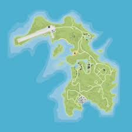

cayo perico is a heist where you go to a drug lords island to steal tequila. madrazo files. bearer bonds. pink diamond and diamond studed panther (more on that in a sec) you can do this heist however many times u want the max amount of mony u can get is: $4,570,600
Cayo Perico is considered one of the most secure private islands in the entire world, and the location of the remote island compound of the world’s most notorious drug dealer, Juan Strickler (also known as El Rubio).[1] It also contains an untold fortune in art, gold and drug money, scattered across the island. Cayo Perico is not only the nerve center of El Rubio’s drug empire, but also plays host to his other great love: marathon beach dance parties, where everyone from jetsetters and heiresses to legendary music producers gather to rave until the sun comes up.[2] The island first appeared in the "El Rubio Dossier" teaser released during the Los Santos Summer Special update, which contained views of three locations on the island, including a sprawling clifftop Spanish-style estate, a security tower and a farm.
Various artifacts around the island give hints to its history, including a cemetery near the airstrip, several collapsed obelisks, one of which forms the center point of a circular graveyard of 13 plots and remnants of the Spanish Empire, including Conquistador armour. A Primitive Shelter is situated in the southeastern area.
Although the name of the island is "Cayo Perico"—which translates to Parakeet Cay in Spanish—Cayo Perico is not a cay in the topographic sense, and is actually a high island telling by its rocky topography and elevation. With the exception of a few beaches, Cayo Perico contains little sand, with most beaches on the island being covered by small rocks. Cayo Perico’s weather is always set to clear during heist intel or regular visits, therefore having no chance of rain or snow, although there is a very small chance that the weather can be set to a thunderstorm during the Cayo Perico Heist finale. Most of the island’s flora are reused assets from Guarma in Red Dead Redemption 2.
While there are no native fauna seen on land, the wildlife is heard in abundance, including frogs, birds and snakes. A black panther is kept in captivity in El Rubio's compound. A mutilated shark and a stranded whale can be seen, and there are whale skeletons in the water. A Loch Ness Monster inhabits the surrounding seas. Schools of tropical fish can also be seen in the water.
The island is littered with many historical artifacts and interesting objects, some of which are relevant to the heist and will be able to be sent to Pavel during intel gathering for The Cayo Perico Heist. Others are just noteworthy for existing. The surrounding waters are home to many Wrecks as well as a large meteorite in the far northwest.
tequila value .normal 900k, hard 990k
ruby necklace value .normal 1mil, hard 1mil 100k
bearer bonds value .normal 1mil 100k ,hard 1mil 110k
pink diamond value .normal 1mil 300k ,hard 1mil 430k
black panther value .normal 1mil 900k ,hard 2mil 90k
cash value: 90k weight: 25%
weed value: 147,870 weight: 33%
painting value: 189,500 weight: 50%
cocaine value: 220,095 weight: 50%
gold value: 332,184 weight: 66%
cash value: 360k weight: 100%
painting value: 379k weight: 100%
weed value: 443,610 weight: 100%
cocaine value: 440,190 weight: 100%
gold value: 498,276 weight: 100%